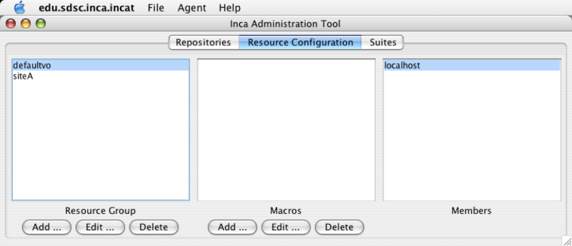
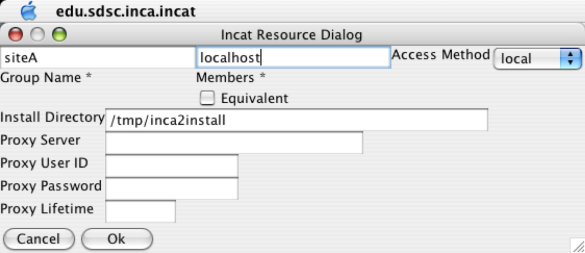
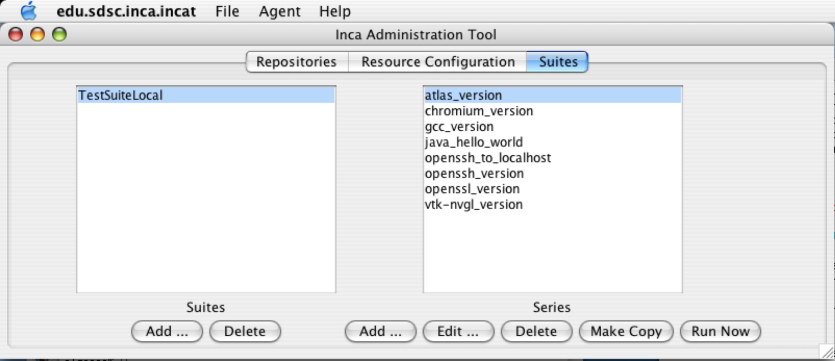
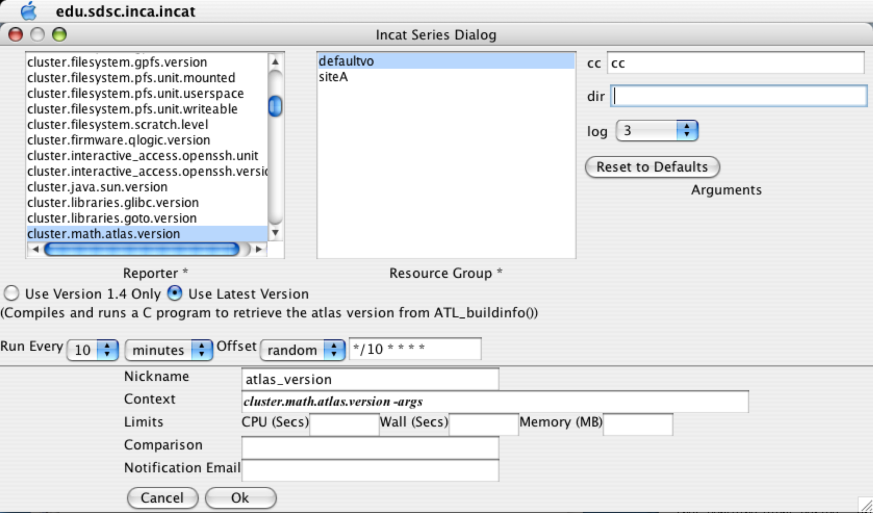

- Table of Contents
- 1. Introduction
- 2. Requirements
- 3. Recommendations
- 4. Quick Start
- 5. Advanced Configuration
- 6. Administering Inca with incat
- 6.1. Repositories
- 6.2. Resources
- 6.3. Suites
- 6.4. Committing/Saving
- 6.5. Other Resource Options
- 6.6. Using Resource Macros
- 6.7. Series Comparison and Notification
- 7. Data Display (Data Consumers)
- 8. Reporters and Repositories
- 8.1. Executing Reporters
- 8.2. Writing Reporters
- 8.3. Reporter Repositories
- 9. Web Services and APIs
- 10. Troubleshooting
1. Introduction
Determining whether a Grid is up in the face of complex Grid software deployments can be difficult and depends on the types of applications and users that utilize it. By detailing a set of software, services, and features that should be available on a Grid in a machine-readable format, a Grid can be tested periodically by an automated system to verify its health and usability to users. To this end, we have developed Inca as a flexible framework to perform periodic, user-level functionality testing and performance measurement of Grid systems. It includes mechanisms to schedule the execution of information gathering scripts, and to collect, archive, publish, and display data
The architecture of Inca and a description of its components is shown in the below figures.
| A reporter is an executable program that tests or measures some aspect of the system or installed software. |
| A report is the output of a reporter and is a XML document complying to the reporter schema in Section 8.2.1. |
| A suite specifies a set of reporters to execute on selected resources, their configuration, and frequency of execution. |
| A reporter repository contains a collection of reporters and is available via an URL. |
| A reporter manager is responsible for managing the schedule and execution of reporters on a single resource. |
| A agent is a server that implements the configuration specified by the Inca Administrator. |
| incat is a GUI used by the Inca administrator to control and configure the Inca deployment on a set of resources. |
| A depot is a server that is responsible for storing the data produced by reporters. |
| A data consumer is typically a web page client that queries a depot for data and displays it in a user-friendly format. |
2. Requirements
The initial default installation of Inca has the following requirements:
JDK or JRE 1.4.2_09 or greater
Perl 5.8.x or greater
OpenSSL-0.9.6[jkl] or OpenSSL-0.9.7b or greater
GNU tar (i.e., no limit on filename length)
For each resource Inca will be monitoring, the following is required:
Perl 5.8.x or greater
OpenSSL-0.9.6[jkl] or OpenSSL-0.9.7b or greater
GNU tar (i.e., no limit on filename length)
3. Recommendations
We recommend that Inca be run under a regular user account and not as root for the following reasons:
To best detect user-level problems, Inca should be run under a regular user account with the default environment setup.
Inca does not require any special privileges to run.
Furthermore, we recommend that a valid GSI credential be obtained for this regular user account so that tests of Grid software requiring proxy certificates can be executed. Please request a GSI credential from your virtual organization's Certificate Authority (CA) and consult your organization's security policy regarding GSI credential use. Section 6.5.2 describes using proxy credentials in the Inca framework.
4. Quick Start
This section describes how to download, install and verify the Inca 2.0 beta binary release. The figure below represents a typical installation.

| Step 1: Download the installer script |
| Step 2: Run the installer script |
| Step 3: Change to the Inca installation directory |
| Step 4: Create credentials for Inca components |
| Step 5: Start up Inca components with a sample default configuration |
| Step 6: View the Inca web server pages |
| Step 7: View the sample default configuration using the Inca GUI tool |
Download the incaInstall.sh script:
% wget http://inca.sdsc.edu/releases/2.0beta/incaInstall.sh
Execute the install script to download the binary distribution from our website and unpack it into an installation directory. The installation directory is represented by the $INCA_DIST environment variable - it may be useful to set this variable now.
% sh incaInstall.sh $INCA_DIST all
$INCA_DIST is the location of the directory where you want to install Inca. You should see something like:
Retrieving http://inca.sdsc.edu/releases/current/inca-common-java-bin.tar.gz --12:49:38-- http://inca.sdsc.edu/releases/current/inca-common-java-bin.tar.gz => `inca-common-java-bin.tar.gz' Resolving inca.sdsc.edu... 198.202.75.28 Connecting to inca.sdsc.edu|198.202.75.28|:80... connected. HTTP request sent, awaiting response... 200 OK Length: 5,921,461 [application/x-tar] 100%[======================>] 5,921,461 1.23M/s ETA 00:00 12:49:43 (1.18 MB/s) - `inca-common-java-bin.tar.gz' saved [5921461/5921461] ... common-java installed ... agent installed ... consumers installed ... depot installed ... incat installed
Change to the top level directory of your Inca installation:
% cd $INCA_DIST
Create certificates for the Inca components (enables secure component communication):
% ./bin/inca createauth
The output will look similar to below and when it is completed, you should see a certificate/key created for each of the four Inca components and stored in $INCA_DIST/etc:
password> (choose a password for the administration of your Inca installation) Generating a 512 bit RSA private key .++++++++++++ writing new private key to 'clientx.sdsc.edukey.pem' ----- agent Generating a 512 bit RSA private key .++++++++++++ writing new private key to 'agentkey.pem' ... writing new private key to 'consumerkey.pem' ... writing new private key to 'depotkey.pem' ... writing new private key to 'incatkey.pem' ...
Start the Inca server components and deploy the sample default configuration (NOTE: this command only needs to be executed ONCE. The components started in this step can later be stopped with "./bin/inca stop all" and started with "./bin/inca start all"). The Inca server components are agent, depot, and consumer and will be started on ports 6323, 6324, and 8080 respectively. Please edit the inca.properties file in etc/common to change these defaults. More information can be found in Section 10.
% ./bin/inca default
You should see something like:
password> (enter password from the last step) Preparing to deploy default Inca configuration... Initializing Inca configuration... ** Warning: this will erase any previously collected reporter state on the Inca depot and configuration on the agent Do you wish to continue (y/n)? y Initializing depot... Initializing c3p0 pool... com.mchange.v2.c3p0.PoolBackedDataSource@904b13 [ connectionPoolDataSource -> com.mchange.v2.c3p0.WrapperConnectionPoolDataSource@58bc22 [ acquireIncrement -> 1, acquireRetryAttempts -> 30, acquireRetryDelay -> 1000, autoCommitOnClose -> false, automaticTestTable -> null, breakAfterAcquireFailure -> false, checkoutTimeout -> 0, connectionTesterClassName -> com.mchange.v2.c3p0.impl.DefaultConnectionTester, factoryClassLocation -> null, forceIgnoreUnresolvedTransactions -> false, idleConnectionTestPeriod -> 0, initialPoolSize -> 3, maxIdleTime -> 1800, maxPoolSize -> 10, maxStatements -> 50, maxStatementsPerConnection -> 0, minPoolSize -> 3, nestedDataSource -> com.mchange.v2.c3p0.DriverManagerDataSource@e8b5fe [ description -> null, driverClass -> null, factoryClassLocation -> null, jdbcUrl -> jdbc:hsqldb:test, properties -> {user=******, password=******} ] , preferredTestQuery -> null, propertyCycle -> 300, testConnectionOnCheckin -> false, testConnectionOnCheckout -> false, usesTraditionalReflectiveProxies -> false ] , factoryClassLocation -> null, numHelperThreads -> 3, poolOwnerIdentityToken -> 904b13 ] Database Initialization Completed done Initializing agent done Started Inca agent Started Inca consumer Started Inca depot Sleeping for 20 seconds while the components come online Deploying default configurationDuring this step:
three server components are started on localhost:
% ps | grep java 3527 p1 S 0:14.21 /usr/bin/java -Xmx256m edu.sdsc.inca.Agent -l /inca-dist/./bin/../var/agent.log 3560 p1 S 0:17.63 /usr/bin/java -Xmx256m edu.sdsc.inca.Depot -l /inca-dist/./bin/../var/depot.log 3593 p1 S 0:15.43 /usr/bin/java -Xmx256m edu.sdsc.inca.Consumer -l /inca-dist/./bin/../var/consumer.log
a sample suite called TestSuiteLocal is sent to the agent requesting reporters to be started on a localhost client using the schedule:
1-59/10 * * * * cluster.math.atlas.version 2-59/10 * * * * cluster.compiler.gcc.version 3-59/10 * * * * cluster.security.openssl.version 4-59/10 * * * * cluster.interactive_access.openssh.version 5-59/10 * * * * cluster.interactive_access.openssh.unit 6-59/10 * * * * viz.lib.vtknvgl.version 7-59/10 * * * * viz.lib.chromium.version 8-59/10 * * * * cluster.compiler.any.unit
a client component is started on localhost:
% ps | grep Manager 5382 p1 S 0:02.14 /usr/bin/perl /home/incaReporterManager/sbin/../sbin/reporter-manager -d incas://client64-236.sdsc.edu:6324 -c etc/rmcert.
the agent receives TestSuiteLocal suite and installs a reporter manager on the localhost in ~/incaReporterManager (takes 1-5 minutes - view progress of build in ~/incaReporterManager/build.log)
after the reporter manager is built, it registers itself with the agent. The agent will send the reporter manager the set of reporters, libraries, and execution schedule.
The reporter manager executes reporters based on the execution schedule and sends reports to the depot.
To view results and verify that your Inca installation is working correctly, open the URL below in a browser. Starting a web server is not required, but you may need to replace "localhost" with the full hostname of your machine.
http://localhost:8080
You should see a start up screen similar to the figure below initially indicating an empty Inca configuration.
After a few minutes (when the consumer cache is refreshed), reload the page and you should see a start up screen similar to the figure below showing one suite called TestSuiteLocal (our default sample configuration), a resource group called defaultvo, and one resource called siteA which is a nickname for the machine you installed Inca on.
Select TestSuiteLocal and defaultvo and press the Submit button. You should see a results page similar to below showing 7 software packages listed on the top and a table with the packages divided into 4 categories (compilers, grid services, math libraries, and scientific visualization). Each package may contain the results of a software package version query (e.g., gcc) and/or unit test (e.g., java -- unit test name is java_hello_world). Almost all boxes should be empty indicating that the reports have not yet been received.
Refresh the page after a few minutes and you should begin to see more boxes filled in until it looks like the below figure. If you do not see a results filled in, check the .log files in $INCA_DIST/var for ERROR or Exception. See Section 10 for more help on debugging.
Click on any red/green box to see the details of how the result was collected. The below figure shows the details of the cluster.compiler.any.unit reporter that compiles and executes a small hello world java program.
View the Inca sample default configuration using the Inca GUI tool, incat (Inca Administration Tool). You can use incat to make changes to the default configuration (e.g., add a new resource to defaultvo or add new tests to TestSuiteLocal). See Section 6 for more information about using incat.
Use the following command to start incat:
% ./bin/inca start incat -A localhost:6323
You should now see the Java GUI window appear on your local machine. If you don't see Java GUI windows pop up like those in Figure 8 and Figure 9, it is probable that X-Window forwarding is not set up correctly between the machine where you installed Inca and your local machine. You can either configure X-Window forwarding, or you can start incat on a local machine as described in step 8.
Once incat has information from the agent, the following screen will display:THIS STEP IS OPTIONAL. If you don't see Java GUI windows pop up like those in Figure 8 and Figure 9, you can use this step to install incat on a local machine.
Copy the incaInstall.sh script to a local machine.
% wget http://inca.sdsc.edu/releases/2.0beta/incaInstall.sh
Install incat on a local machine:
% ./incaInstall.sh $INCA_DIST incat
Copy the incat key, certificate, and trusted directory from the original machine to your local machine:
% scp orig.machine:$ORIG_INCA_DIST/etc/incatkey.pem $INCA_DIST/etc/; \ scp orig.machine:$ORIG_INCA_DIST/etc/incatcert.pem $INCA_DIST/etc/; scp "orig.machine:$ORIG_INCA_DIST/etc/trusted/*" $INCA_DIST/etc/trusted/;
Change the agent key/cert to incat key/cert in the $INCA_DIST/etc/common/inca.properties local file:
#--------------------------------------------------------------------------- # agent #--------------------------------------------------------------------------- inca.agent.auth=true inca.agent.password= inca.agent.cert=incatcert.pem inca.agent.key=incatkey.pem inca.agent.trusted=trusted
Start the incat component on a local machine with the agent hostname from the original machine:
% cd $INCA_DIST; ./bin/inca start incat -A ORIGHOST:6323 &
5. Advanced Configuration
This section will describe advanced configuration options (e.g. installing components in non-default locations, changing inca.properties and other defaults).
5.1. Using Postgres as DB Backend
Stop the depot
% cd $INCA_DIST; ./bin/inca stop depot
Edit $INCA_DIST/etc/hibernate.properties
Comment out the first 5 lines which specifies for hibernate to use hsql as its backend database:
#hibernate.dialect=org.hibernate.dialect.HSQLDialect #hibernate.connection.driver_class=org.hsqldb.jdbcDriver #hibernate.connection.url=jdbc:hsqldb:test #hibernate.connection.username=sa #hibernate.connection.password=
Uncomment the second block of lines 8-13 which specifies for hibernate to use postgres:
# Settings for a local PostgreSQL database. hibernate.dialect=org.hibernate.dialect.PostgreSQLDialect hibernate.query.substitutions=yes 'Y', no 'N' hibernate.connection.driver_class=org.postgresql.Driver hibernate.connection.url=jdbc:postgresql:test hibernate.connection.username=test hibernate.connection.password=
Replace the value "jdbc:postgresql:test" for property "hibernate.connection.url" on line 11 with the following (where "hostname" is the FQDN of the host where postgres is installed and "username" is the username to connect to the postgres DB):
hibernate.connection.url=jdbc:postgresql://hostname/username
Replace the value "test" for property "hibernate.connection.username" on line 12 with the postgres username:
hibernate.connection.username=username
Download the postgres jdbc jar file pg74.216.jdbc3.jar to your $INCA_DIST/lib directory:
% cd $INCA_DIST/lib % wget http://inca.sdsc.edu/workshop/pg74.216.jdbc3.jar
Initialize the depot (set up the Inca tables):
You should see something like:% cd $INCA_DIST; ./bin/inca depot -d
Initializing c3p0 pool... ... Database Initialization Completed
Start the depot
% ./bin/inca start depot
6. Administering Inca with incat
Inca provides a graphical administration tool, named incat, that allows you to configure your deployment. Using incat, you can specify the repositories from which Inca should retrieve reporters, the hosts where you wish to run reporters, and which reporters you wish to run on each host.

The simplest way to run incat is via the inca command line tool in $INCA_DIST: "./bin/inca start incat". You can connect incat to a running Inca Agent via the -A option, e.g., "./bin/inca start incat -A localhost:6323".
As mentioned in the Quick Start guide, you can use the inca command line tool to install a default Inca configuration. The discussion below describes how you would use incat to specify the same configuration. Before continuing, use the inca script to start both a Depot and an Agent on your host.
6.1. Repositories
incat begins by showing the panel for Inca reporter repositories. The three sections of this panel display the list of repositories you've specified, the list of reporters contained within those repositories, and property information for the currently-selected reporter. Buttons in the Repositories section allow you to add and delete repositories from your list. If your list contains multiple repositories, a checkbox in the Reporters section determines whether the reporter list shows reporters from all repositories or only from the selected one. Finally, pressing the Show button in the Reporters section will open a text window that contains the source code of the currently-selected reporter.
The default Inca configuration retrieves reporters from the Inca project repository. To add this repository to your list, press the Add button in the Repositories section, enter the URL "http://inca.sdsc.edu/repository/latest" in the pop-up window that appears, then press the OK button. Within a few seconds you should see the repository URL appear in the Repositories list, a set of reporters in the Reporters list, and properties for the first reporter in the Reporter Properties list. If you like, you can select reporters in the Reporters list and display their source code by pressing the Show button. (Double-clicking the name in the reporter list accomplishes the same thing.)
6.2. Resources

Pressing the Resource Configuration tab near the top of the incat window takes you to incat's resource specification panel. Here you can enter and edit information about the hosts on which you want Inca to run reporters. The sections of this panel show resource groups (sets of hosts) that you've defined, a set of macros that you can use when defining reporter series to run on a particular resource group, and a list of hosts that are included in the selected resource group. Buttons in the Resource Group section allow you to add, edit, and delete resource groups, and a similar set in the Macros section allow you to add, edit, and delete macros associated with the currently-selected resource group.
The default Inca configuration defines two resource groups--one that specifies the host where the Inca Agent will launch a new Reporter Manager (localhost) and a container group that can be extended to include both localhost and any others that you define (e.g. other hosts running Reporter Managers). To define these in incat, press the Add button in the Resource Groups section to open the resource group edit dialog.

In the Group Name text box, enter the name "siteA" as a nickname for the machine the Reporter Manager client runs on (this name choice is arbitrary; "agentHost" or "local" would also work). The Members text box specifies the hosts that are in this resource group; for this group, enter either "localhost" or the DNS name of the host where the Reporter Manager client will run. The Equivalent checkbox underneath the Members text box indicates that Inca should treat the hosts in this group as a single host, only running reporters on one of them. This is most often useful when a single DNS name maps to multiple hosts (e.g., multiple login nodes for a batch system). In this case, leave the box unchecked.
Select "local" in the Access Method pull-down list. This indicates that the Inca Agent can access this host directly without using either Globus or ssh (i.e., it's the same host where the Agent is running).
If you enter a path in the Install Directory text box, Inca will install the Reporter Manager code in that directory; otherwise, it will use a default path (~/incaReporterManager). Proxy information isn't needed for this resource group, so leave the other text boxes blank.
Press OK to complete entry of this resource group. incat will close the resource group edit dialog and will display siteA in the Resource Groups section of the Resource Configuration panel.

Press the Add button again to add a second resource group. Give this one the name "defaultvo" and enter "siteA" in the Members text box. This tells incat that any hosts in the "siteA" group (localhost, in this case) are also part of the defaultvo group. If you defined other groups, "siteB", "siteC", etc., you could include these in defaultvo by listing them in the Members text box, separated by spaces. Press OK to complete entry of this resource group. Select siteA, then defaultvo in the Resource Groups list and notice that the Members panel lists localhost as a member of both.
6.3. Suites

Pressing the Suites tab near the top of the incat window takes you to incat's suite/series specification panel. Here you specify the reporters you want to run, the resource groups to run them on, how frequently to run them, and the arguments to use when running them.
A suite groups a set of reporter series. Suites are largely a convenience for organizing related series, and the decision as to whether to place all your series into a single suite or to divide them into multiple suites is up to you. One consideration is that the Inca Consumer uses suites as its primary structure for organizing the display of reporter results, so organizing related series into suites may make the Consumer web pages more readable.
The default Inca configuration defines a single suite named TestSuiteLocal that contains eight series. Press the Add button in the Suites section of the panel, enter "TestSuiteLocal" in the pop-up window, then press the OK button. You're now ready to add series to this new suite. Press the Add button in the Series section to open the incat series dialog.

The top half of the series dialog contains basic information about reporter execution--the name and version of the reporter, the resource group to run it on, what values to pass in the command line arguments, and how often to run. For this first series, scroll down to select the reporter "cluster.math.atlas.version" and leave the "Use Latest Version" radio button selected (the other choice, "Use Version 1.4 Only", indicates that your series would continue to run the same version of the reporter even if an updated version became available). Because both defaultvo and siteA refer to the host where the Inca Agent is running, you can select either of them in the Resource Group list. In the Arguments section, leave the cc (compiler) argument with its default value, "cc", and leave the dir argument blank, which will instruct the reporter to search a set of common directories for the atlas installation. Use the pull-down menu to set the log argument to 3; this will cause any error, warning, and system-level log messages generated by the reporter to be included in its report. Finally, use the pull-down menus in the frequency section to indicate that the reporter should run every 10 minutes. When you do this, the contents in the text box to the right changes to "*/10 * * * *". This is crontab syntax (see the section 5 man page) for once every 10 minutes. If you're familiar with crontab, you can enter values in the text box directly rather than using the pull-down menus.
The bottom half of the series dialog allows you to supply optional customization information for your series. You can supply a descriptive name for your series in the Nickname text box, and the Inca Consumer will include it as part of its display. The nickname defaults to the name of the reporter; for this series, enter "atlas_version" as the value. The context string allows you to specify how the reporter should be run by entering sh code either before or after "cluster.math.atlas.version -args" in the text box. For example, you could run this reporter niced by entering "nice -9 " at the beginning of the box. For this series, leave the text box unchanged. The limits section allows you to set CPU time, wall clock time, and memory limits on the reporter. If the reporter exceeds any limits you set, the Inca Reporter Manager will terminate its execution and send an error report to the Inca Depot. The bottommost two text boxes in the series dialog allow you to test the output of the reporter and send email if the test fails. This is covered in Section 6.7 below; for this series leave these boxes blank. Press the OK button, and incat will close the series dialog box and add the series to the Series list in the suite/series specification panel.
The other seven series in default Inca configuration are composed similarly to the first one. Press the Add button in the series section for each of them, then set the values in the series dialog as specified in the table below. Set the log argument for each series to 3 and the frequency to 10 minutes.
Table 1. Default Configuration Series
Reporter | Nickname | Arguments |
|---|---|---|
cluster.compiler.gcc.version | gcc_version | |
cluster.security.openssl.version | openssl_version | |
cluster.interactive_access.openssh.version | openssh_version | |
cluster.interactive_access.openssh.unit | openssh_to_localhost | host: localhost; login: inca |
viz.lib.vtk-nvgl.version | vtk-nvgl_version | |
viz.lib.chromium.version | chromium_version | |
cluster.compiler.any.unit | java_hello_world | compiler: javac; lang: java |
6.4. Committing/Saving
Your Inca deployment configuration is now complete. At this point, it's a good idea to use the Save As option in incat's File menu to write the configuration to a file. That way, you have a local copy of the configuration that you can later modify. The file is formatted XML; if you're curious, you can read through it to see how incat represents the information you've entered.
Although your configuration is complete, it's not yet active. To tell Inca to begin running reporters, you need to use incat to send your configuration to your Inca Agent. If you started incat with the --agent argument, then you're already connected to your Agent. Otherwise, use the Connect option in incat's Agent menu to establish a connection. Once you're connected, you can use the Commit option in the Agent menu to send the configuration to the Agent. In response, the Agent will install the Inca Reporter Manager code on the host specified in incat's "Resource Configuration" panel and begin running the reporters you specified in the "Suite Series" panel.
6.5. Other Resource Options
6.5.1. Resource Access Methods
By default, the Agent starts a Reporter Manager client on localhost (the resource group with localhost will have the "local" access method selected in incat). Reporter Managers can be started with the following access methods:
manual:
Entering a manual resource group indicates that you want complete, direct control over Inca execution on the group. For a manual resource group you must start the Reporter Manager on the command line and restart it any time you want to change the reporter series configuration for the group. The Agent will NOT automatically start a Reporter Manager for a manual resource as it will for local, ssh, or globus2 resources.
local:
The Agent starts a Reporter Manager on the same machine where the Agent is already running (localhost).
ssh:
The Agent starts a Reporter Manager on a remote machine using ssh to access the remote machine. Reporter Manager files are copied from the Agent to the remote machine using sftp. For ssh resource groups, incat provides text boxes for you to enter the login id, password, and path to the ssh key file on the Agent machine. For security purposes, incat echoes asterisks for the password and encrypts it when you save the configuration to a file.
globus2:
The Agent starts a Reporter Manager on a remote machine using globus to access the remote machine. Reporter Manager files are copied from the Agent to the remote machine using GridFtp. When you select globus2 in the Access Method pull-down, incat provides text boxes for you to enter contact information for the resource's Globus Gram and GridFtp servers. If you leave these boxes blank, Inca defaults to ports 2119 and 2811, respectively, for the first host in the resource group's member list. Access to Globus hosts requires an active Globus proxy on the Agent's host. You can either create a manual proxy on the Agent machine before starting, or you can store a proxy on a myproxy server and complete the four incat proxy dialog boxes (see below) so that the Agent can obtain one as needed.
6.5.2. Proxies
For convenience, the Inca framework can be used to retrieve a proxy for the globus2 access method or for reporters than require an active proxy. Reporters that require a proxy should use the Inca::Reporter::GridProxy module described in Section 8.2.3.
Before configuring Inca to retrieve proxies, first store a proxy on a myproxy server. For information about setting up a myproxy server or storing proxies on a server, please see the official myproxy documentation.
The Agent can automatically retrieve a proxy from a myproxy server if the proxy information is defined in incat as follows:

The dialog boxes are the hostname of the myproxy server, the username and password used to store the proxy, and the lifetime in hours that the agent should retrieve a proxy for (the default is 12 hours).
6.6. Using Resource Macros
Resource macros provide a shorthand for defining multiple, similar series. For example, suppose you wanted to add three series to the configuration defined above to measure the ping time to three different hosts, named blue.ufo.edu, green.ufo.edu, and red.ufo.edu. One approach would be to define a series for the blue, use the Make Copy button in the Series section of the Suites panel to make two copies, then modify them to ping green and red.
A better approach is to use a macro for the host names and let Inca replicate the series for you. In the Resource Configuration panel, click on siteA in the Resource Group section. Next, press the Add button beneath the Macros section. This opens a dialog box that allows you to enter the name and value(s) of a macro associated with the current resource group. Enter "targets" in the Macro Name text box and "blue green red" in the Macro Value(s) text box, then press OK. The definition of the targets macro now appears in the Macros section of the Resource Configuration panel.

To make use of the macro you've defined, click the Suites tab, then press the Add button underneath the Series section to open the series edit dialog. In the dialog, set the reporter to grid.benchmark.performance.ping and the resource group to siteA.
In the host text box in the Arguments section of the dialog, enter "@targets@.ufo.edu". Macro references in incat are indicated by placing a "@" before and after the macro name. When the Inca Agent encounters a macro reference in a series, it makes one copy of the series for each value of the macro. Since the targets macro has three values--blue, green, and red--the Inca Agent will make three copies of this series, substituting a single value for the macro reference in each. In this case that means that you'll have one series with a host argument of "blue.ufo.edu", one with a host argument of "green.ufo.edu", and one with a host argument of "red.ufo.edu".
The inca web pages use the series nickname when displaying series results. If you leave the series nickname with its default value, the name of the reporter, then all three series will have the same nickname. Instead, you can enter "ping_to_@targets@" in the nickname text box. The Inca Agent will expand this reference in parallel with the reference in the host argument, so your three series will have the nicknames ping_to_blue, ping_to_green, and ping_to_red, respectively.

6.7. Series Comparison and Notification
For a particular series, the Inca system by default reports only whether or not the series reporter was able to execute successfully--whether a version reporter was able to determine a package version, a unit reporter was able to run a program, etc. Using Inca's comparison and notification feature, you can refine a series to define success more precisely and to receive notification from Inca when a series reporter detects a problem. The bottom two text boxes of the series edit dialog provide access to Inca's comparison and notification feature.

In the Comparison text box, you can enter a boolean expression that Inca will use to test the output of the series reporter. When the expression evaluates to false, Inca flags it as a failure and the Consumer will indicate an error on the web page.
The expression can test the content of the report body, the content of the report error message, or the value of any symbols defined in the report body by <ID> tags. The expression may use any of the boolean operators <, <=, >, >=, ==, and !=, plus perl's pattern match (=~) and mismatch (!~) operators. One simple test would be "body =~ /./", which would test whether the report body contained any characters. Tests can be joined together by the && and || operators. Using these, you could ignore an expected, minor error with the test "body =~ /./ || errorMessage == 'Try again later'".
As mentioned above, you can include symbols defined in the report body in your tests. The Inca system uses the content of any subsequent tag as the symbol value. For example, the body of the output of the gcc version reporter might be
<body>
<package>
<ID>gcc</ID>
<version>3.1</version>
</package>
</body>
|
Here, Inca will use "3.1" as the value of the symbol "gcc". With this output, the comparison test "gcc >= 3.0" would succeed, while the comparison "gcc == 3.0" would fail. If the report body contains an <ID> tag with no subsequent tag, the value of the symbol is defined to be "".
If you enter an email address into the "Notification Email" text box, Inca will send a message whenever the success/failure status of the series changes. Whenever the reporter in a previously-successful series fails, Inca will construct and mail a message describing the failure. Similarly, whenever a reporter succeeds in a series that had been failing, Inca will send an email noting that the previous failure has been fixed. Finally, any time the reporter in a failing series indicates that the nature of the problem has changed (e.g., the error message changes), Inca will send an email to note the difference.
7. Data Display (Data Consumers)
The data that the Inca depot stores, as with all database data, can be displayed in many ways. A data consumer is anything that retrieves data from the depot and displays it (e.g. a JSP, sql query, CGI, etc.).

Data consumers can query the Inca depot to produce current and historical reports and graphs or customized status information. The Inca depot comes with two pre-defined queries:
given instance and config IDs for a series, returns XML like the following (the results from executing a reporter at a particular point in time)
<reportDetails> <suiteId>1</suiteId> <seriesConfigId>5</seriesConfigId> <seriesId>5</seriesId> <reportId>1</reportId> <instanceId>73</instanceId> <seriesConfig> ... <nickname>java_hello_world</nickname> ... </seriesConfig> <report> ... </report> <sysusage> ... </sysusage> <stderr/> </reportDetails>given a suite name, returns XML like the following (the latest report summaries for all of the series in the particular suite)
<reportSummary> <hostname>Computer.local</hostname> <uri>http://repository/compiler.any.unit</uri> <nickname>java_hello_world</nickname> <seriesConfigId>5</seriesConfigId> <instanceId>73</instanceId> <gmt>2006-12-20T16:00:11.000-08:00</gmt> <body> <package> <ID>openssl</ID> <version>0.9.7i</version> </package> </body> </reportSummary> <reportSummary>...</reportSummary> <reportSummary>...</reportSummary>
The default data consumer is a Jetty served JSP page (http://localhost:8080/index.jsp) that allows its user to choose "suiteName" and "resourceID" parameters for a second JSP page called xslt.jsp. The xslt.jsp script retrieves XML (partly from the second pre-defined query shown above) and formats it with an XSL stylesheet if the script is passed the name of a stylesheet as an input parameter. The default data consumer redirects to the xslt.jsp script and adds an input parameter with an XSL stylesheet so the result is formatted html (i.e. index.jsp redirects to something like http://localhost:8080/xslt.jsp?suiteName=TestSuiteLocal&resourceID=defaultvo&xmlFile=swStack.xml&xsl=swStack.xsl).
To view the XML that is retrieved and formatted by the xslt.jsp script, remove its XSL parameter. For example, http://localhost:8080/xslt.jsp?suiteName=TestSuiteLocal&resourceID=defaultvo&xmlFile=swStack.xml would produce something similar to:
<combo>
<all2allSummaries xmlns="http://inca.sdsc.edu/dataModel/all2all_2.0">
<resources xmlns="">
<resource>
<name>siteA</name>
<testSummaries>
<testSummary>
<name>gridftp</name>
<numSuccesses>15</numSuccesses>
<numAtFaultFailures>0</numAtFaultFailures>
<numNotAtFaultFailures>1</numNotAtFaultFailures>
<failures/>
</testSummary>
<testSummary>
<name>gram</name>
<numSuccesses>13</numSuccesses>
<numAtFaultFailures>1</numAtFaultFailures>
<numNotAtFaultFailures>0</numNotAtFaultFailures>
<failures>
<failure>
<nickname>all2all:gram_to_siteA</nickname>
<instanceId>239352</instanceId>
<seriesConfigId>172057</seriesConfigId>
</failure>
</failures>
</testSummary>
</testSummaries>
</resource>
</resources>
</all2allSummaries>
<suite>
<reportSummary>
<hostname>host1.name</hostname>
<uri>http://repository/globus.unit.xio</uri>
<nickname>gt4-xio</nickname>
<seriesConfigId>115446</seriesConfigId>
<instanceId>118115</instanceId>
<gmt>2006-11-16T23:49:49.000-08:00</gmt>
<body/>
</reportSummary>
<reportSummary>
<hostname>host2.name</hostname>
<uri>http://repository/globus.unit.xio</uri>
<nickname>gt4-xio</nickname>
<seriesConfigId>115466</seriesConfigId>
<instanceId>219103</instanceId>
<gmt>2006-12-15T01:31:53.000-08:00</gmt>
<body>
<unitTest>
<ID>xioTest</ID>
</unitTest>
</body>
</reportSummary>
</suite>
<resourceConfig>
<resources>
<resource>
<name>siteA</name>
<macros>
<macro>
<name>__regexp__</name>
<value>host.sitea.org</value>
</macro>
</macros>
</resource>
</resources>
</resourceConfig>
<stack>
<id>Software and Services</id>
<category>
<id>Math Libraries</id>
<package>
<id>globus</id>
<version>4.0.1</version>
<tests>
<version>
<id>gt4-version</id>
</version>
<unitalias>
<id>gt4-xio</id>
</unitalias>
<unitalias>
<id>all2all:gram_to_siteA</id>
</unitalias>
</tests>
</package>
</category>
</stack>
</combo> |
The XML above can be broken down into the following sections:
all2allSummaries (cross-site test results calculated by the consumer):
The default installation doesn't include cross-site tests; this section will be empty unless the Inca admin creates all2all series in incat. Cross-site, or "all to all", tests determine whether all resources in a Grid can reach all other resources (e.g. via gsissh, gram, gridftp). To be included in cross-site test calculation, a series must be assigned a nickname like "all2all:x_to_y" in incat. Cross-site failures are calculated differently than regular failures. For example, resource A will not be assigned a failure trying to reach resource B if all other resources trying to reach resource B also fail (i.e. there is a problem with resource B not resource A).
suite (xslt.jsp "suiteName" parameter):
array of report summaries for the suite. This part of the XML is retrieved from the pre-defined depot query that takes a suite name (from the xslt.jsp suiteName parameter) and returns summaries for the latest series instance in that suite.
resourceConfig (xslt.jsp "resourceID" parameter):
array of all resources within a given resource group (from the xslt.jsp resourceID parameter) and their macros. This part of the XML is retrieved from the agent.
extra xml (xslt.jsp "xmlFile" parameter):
XML from the file passed as the xslt.jsp xmlFile parameter. The default file is $INCA_DIST/etc/common/swStack.xml, but any XML file in the $INCA_DIST/etc/common directory can be passed as the xslt.jsp xmlFile parameter and it will automatically be picked up by the data consumer. When new series are added in incat, add the new series nicknames to the swStack.xml file as in the figure below to add the series to the default page.

To change the XML to HTML transformation, either edit the default XSL stylesheet ($INCA_DIST/etc/swStack.xsl for the summary page or $INCA_DIST/etc/instance.xsl for the report detail pages), or pass another XSL file in the $INCA_DIST/etc directory as the xslt.jsp "xsl" parameter. [ xsl tutorial ]
Change default CSS (Cascading Style Sheet) properties such as colors and fonts by editing the $INCA_DIST/var/jetty/webapp/css/inca.css file. [ css tutorial ]
8. Reporters and Repositories
Inca reporters are executable programs and scripts, generally small, that test and report the health and characteristics of a system. The figure below illustrates a typical Inca installation where reporters are retrieved from a repository and sent to Reporter Managers on Grid resources by the Agent. The Reporter Managers then execute the reporters based on series configuration from the Agent and send the XML reports to the Depot for storage.

8.1. Executing Reporters
Because they are executables, Inca reporters are independent of the rest of the Inca system. Reporters can be executed manually from a command line or automatically as part of an Inca installation. Incorporating your own reporters into a running Inca installation requires only writing the reporters (Section 8.2), including them in a repository (Section 8.3), and configuring the repository's series using incat (Section 6). Most developers will execute reporters from the command line before adding them to their Inca installation. After installing Inca, you can try executing some of the reporters that come with the distribution from the command line:
% cd $INCA_DIST/Inca-Reporter-*/bin % setenv PERL5LIB ../lib % ./cluster.compiler.gcc.version |
All Inca reporters must support the command line arguments listed in the table below. In addition, a reporter may support additional command line arguments specific to that reporter's task.
Table 2. Reporter Command Line Arguments
Argument | Valid Values | Default Value | Description |
|---|---|---|---|
-help | yes|no | no | Do not run the reporter; instead, print information on running it. If the value of the verbose argument is 0, this information will be readable text; otherwise, it will be reporter XML. |
-log | 0-5|debug|error|info|system|warn | 0 | Include reporter log messages in the reporter output. The named argument values indicate specific types of log messages that should be included. 0 indicates no log messages should be included; the other numeric values indicate error, warn, system, info, and debug messages, cumulatively. For example, --log=2 indicates both error and warn messages should be included, while --log=4 includes error, warn, system, and info messages. |
-verbose | 0-2 | 1 | Determine what the reporter prints. A verbose level of 0 indicates that the reporter prints only 'completed' or 'failed', depending on the outcome of its testing. Verbose level 1 produces XML that reports the testing result, and verbose level 2 adds additional tags to this XML to give instructions on running the reporter. |
-version | yes|no | no | Do not run the reporter; instead, print its version number. |
Executing a reporter using different arguments:
% ./cluster.compiler.gcc.version -log=3 % ./cluster.compiler.gcc.version -help=yes -verbose=0 % ./cluster.compiler.gcc.version -version=yes |
8.2. Writing Reporters
Reporters can be written in any language as long as they output XML according to the schema described in Section 8.2.1. New reporter developers may choose to write reporters in Perl since the Inca distribution includes sample Perl reporters and API modules (Section 8.2.3) for printing XML according to our schema.
8.2.1. Reporter XML Schema
In order to promote interoperability between reporters, we define a specification for how reporter output should be formatted. Given the wide acceptance and availability of tools for XML, the specification requires that reporter output should be formatted using XML. Furthermore, we specify a basic schema that the XML should follow so that we can handle the output in a general manner. The goal of this schema is to be flexible enough to express a wide variety of data.
Our approach is to require a number of XML fields which provide metadata about the output and define one of the fields, body, to be abstract. The body field is a placeholder for the formatted output and can be replaced by any XML substitution group thereby allowing this schema to accommodate a large variety of output. In other words, the basic schema is like an abstract class and the substitution groups provide for subclassing.
The reporter schema is visualized in Figure 10.

8.2.2. Reporter XML Output
Here is the output from the successful run of a typical Inca reporter. The content and meaning of the XML tags is described below.
Figure 11. Example of Reporter Output
<?xml version='1.0'?>
<inca:report xmlns:inca='http://inca.sdsc.edu/dataModel/report_2.1'>
<gmt>2006-11-17T17:35:40Z</gmt>
<hostname>jhayes-Computer.local</hostname>
<name>cluster.compiler.gcc.version</name>
<version>2</version>
<workingDir>/Users/jhayes/Inca/subversion/inca/trunk/devel/reporters/bin</workingDir>
<reporterPath>cluster.compiler.gcc.version</reporterPath>
<args>
<arg>
<name>help</name>
<value>no</value>
</arg>
<arg>
<name>log</name>
<value>0</value>
</arg>
<arg>
<name>verbose</name>
<value>1</value>
</arg>
<arg>
<name>version</name>
<value>no</value>
</arg>
</args>
<body>
<package>
<ID>gcc</ID>
<version>3.3</version>
</package>
</body>
<exitStatus>
<completed>true</completed>
</exitStatus>
</inca:report> |
As shown in Figure 11, reporter output begins with an XML preamble and it surrounded by <report> tags. A prefix with a tag name that references http://inca.sdsc.edu/dataModel/report_2.1, which is the namespace that defines the report schema, can also be used.
The following tags are defined within a <report>:
- gmt
the time the reporter ran (ISO 8601 format)
- hostname
host where reporter ran
- name
reporter name
- version
reporter version number
- workingDir
directory where reporter execution begins
- reporterPath
local path to reporter file
- args
args must contain an arg name/value entry for every argument the reporter supports, including those for which the reporter supplies a default value (help, log, verbose, version)
- log
OPTIONAL TAG (not shown in Figure 11 report). Log entries produced by the reporter. This tag contains one or more <debug>, <error>, <info>, <system>, and/or <warn> tags, each of which gives the text of the message and the time it was produced. Here is a typical example of a log section:
<log> <system> <gmt>2006-11-17T18:28:10Z</gmt> <message>grid-proxy-info 2>&1</message> </system> <debug> <gmt>2006-11-17T18:28:10Z</gmt> <message>Checking for grid proxy: Result of command "grid-proxy-info": sh: line 1: grid-proxy-info: command not found </message> </debug> <error> <gmt>2006-11-17T18:28:10Z</gmt> <message>ERROR: Valid proxy needed for file transfer.</message> </error> </log>- body
The body tag contains the results of the reporter testing. The only requirement for the contents of this tag is that they must be well-formed XML--tags balanced and no extraneous <, >, and & characters. Figure 11 shows the conventional body for version reporters.
- exitStatus
Includes the boolean <completed> tag, indicating whether or not the reporter successfully completed its testing, and the optional <errorMessage> tag, which contains a string indicating why the reporter failed to complete.
- help
OPTIONAL TAG (not shown in Figure 11 report). The help tag describes the reporter and how to run it. Contents include the reporter name, version, description, and url, detailed descriptions of each argument, and an optional list of dependencies that the reporter has on other packages. For example, here is the <help> section for the gcc version reporter.
<help> <ID>help</ID> <name>cluster.compiler.gcc.version</name> <version>2</version> <description>Reports the version of gcc</description> <url>http://gcc.gnu.org</url> <argDescription> <ID>help</ID> <accepted>no|yes</accepted> <description>display usage information (no|yes)</description> <default>no</default> </argDescription> <argDescription> <ID>log</ID> <accepted>[012345]|debug|error|info|system|warn</accepted> <description>log message types included in report</description> <default>0</default> </argDescription> <argDescription> <ID>verbose</ID> <accepted>[012]</accepted> <description>verbosity level (0|1|2)</description> <default>1</default> </argDescription> <argDescription> <ID>version</ID> <accepted>no|yes</accepted> <description>show reporter version (no|yes)</description> <default>no</default> </argDescription> <dependency> <ID>Inca::Reporter</ID> </dependency> <dependency> <ID>Inca::Reporter::Version</ID> </dependency> </help>
8.2.3. Reporter APIs
The Inca release includes a set of Perl modules that make it easier to develop reporters that produce output as shown in Section 8.2.2 and conform to the schema described in Section 8.2.1. The following are a list of modules and their purpose (click on module names for manpages):
This module is the general reporter API and is the base class for all types of reporters. Inca::Reporter automates determination of hostname, gmt, reporter name, etc., handles command-line parsing, provides an interface for log messages, and handles XML generation.
The Inca::Reporter::GlobusUnit module is used for Globus unit tests. This package provides methods for running Globus jobs.
The Inca::Reporter::GridProxy package is a pseudo-module indicating that a reporter requires a proxy credential in order to execute. The following is an example of a reporter that requires a proxy:
#!/usr/bin/env perl use strict; use warnings; use Inca::Reporter::SimpleUnit; my $reporter = new Inca::Reporter::SimpleUnit( name => 'grid.middleware.globus.unit.proxy', version => 2, description => 'Verifies that user has valid proxy', url => 'http://www.globus.org/security/proxy.html', unit_name => 'validproxy' ); $reporter->addDependency( "Inca::Reporter::GridProxy" ); $reporter->processArgv(@ARGV); # check to see if proxy has enough time left $reporter->log( 'info', "X509_USER_PROXY=$ENV{X509_USER_PROXY}" ); my $output = $reporter->loggedCommand('grid-proxy-info -exists -hours 4 2>&1'); if( $? != 0 ) { $reporter->unitFailure("grid-proxy-info failed: $! $output"); } else { $reporter->unitSuccess(); } $reporter->print();The Inca::Reporter::Performance module is used to gather system performance metrics. This package defines a common <body> schema for system/software performance metric reporters and produces a collection of benchmarks, each a set of parameters (name/value) and statistics (name/value/units). For a single benchmark, the Inca::Test::Reporter::Performance::Benchmark module is also available.
The Inca::Reporter::SimpleUnit module is used for software unit tests. This package defines a common <body> schema for unit test reporters and provides methods for recording results of unit tests.
The Inca::Reporter::Usage module is used for creating simple usage reports.
The Inca::Reporter::Version module is used for reporting software versions. This package defines a common <body> schema for version reporters, offers support for subpackage versions, and provides convenience methods for common ways of determining version.
The following is the Perl code for a reporter that produces output like Figure 11. This reporter uses the Inca::Reporter::Version module to determine the version of gcc. Examples of reporters that use the other Perl modules are located in $INCA_DIST/Inca-Reporter-*/bin.
#!/usr/bin/env perl
use strict;
use warnings;
use Inca::Reporter::Version;
my $reporter = new Inca::Reporter::Version(
name => 'cluster.compiler.gcc.version',
version => 2,
description => 'Reports the version of gcc',
url => 'http://gcc.gnu.org',
package_name => 'gcc'
);
$reporter->processArgv(@ARGV);
$reporter->setVersionByExecutable('gcc -dumpversion');
$reporter->print(); |
8.3. Reporter Repositories
The Inca system retrieves reporters from external collections called repositories. A reporter repository is simply a file directory, accessed via a file: or http: URL, that contains a catalog file named Packages.gz. This gzipped file includes a sequence of name:value attribute pairs for every reporter and support package in the repository; blank lines separate the attributes for different reporters. For example, here is a portion of the Packages.gz file for the Inca standard reporter repository.
arguments: help no|yes no;log [012345]|debug|error|info|system|warn 0;verbose [0 12] 1;version no|yes no dependencies: Inca::Reporter;Inca::Reporter::Version description: Reports the version of tgusage file: cluster.accounting.tgusage.version name: cluster.accounting.tgusage.version url: http://www.teragrid.org version: 2 arguments: help no|yes no;log [012345]|debug|error|info|system|warn 0;verbose [0 12] 1;version no|yes no dependencies: Inca::Reporter;Inca::Reporter::SimpleUnit description: ant hello world test file: cluster.admin.ant.unit name: cluster.admin.ant.unit version: 3 arguments: help no|yes no;log [012345]|debug|error|info|system|warn 0;verbose [0 12] 1;version no|yes no dependencies: Inca::Reporter;Inca::Reporter::Version description: Reports the version of Apache Ant file: cluster.admin.ant.version name: cluster.admin.ant.version version: 2 |
Of the attributes shown, only file and name are required. The file attribute gives the relative path to the reporter file, and the name attribute specifies the unique package name of the reporter. If the reporter requires support packages to execute, it should include a dependencies attribute with a semicolon-separated list of package names. The incat administration tool uses the Packages.gz file's arguments and description attributes as part of its series edit dialog. The value of the arguments attribute is a semicolon-separated list giving the name, value pattern, and default value, if any, for each supported command-line argument.
To create a local repository for your own reporters, you only need to collect them into a directory and create a Packages.gz in that directory. The Inca distribution includes a perl script, incpack, that can create Packages.gz for you. Simply run incpack with a list of reporters that you want to include in Packages.gz, e.g.,
perl incpack jade.version f77.unit vim.version |
incpack runs each of the listed reporters with --help=yes --verbose=1 to extract a standard set of attributes. If your reporters use the Inca reporter perl modules, you might need to run incpack with a -I switch to specify the location of the Inca perl library, like this.
perl incpack -I ${INCA_INSTALL}/lib jade.version f77.unit vim.version |
10. Troubleshooting
This section will include debugging information about logging, the default inca.properties file, security (keys, certs, etc.), "manpages" for each component and descriptions of manual resources.